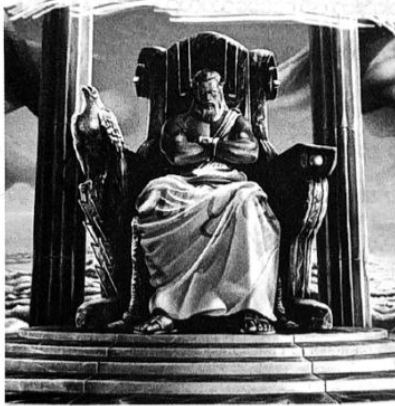

ဆုလာဘ်များစွာ
ကံကြမ္မာ အဘွားအိုသုံးယောက် ကိုယ်တိုင် လုပ်ခ်၏ အလောင်းကို သယ်ဆောင်သွားခဲ့ကြသည်။ အသက် ဆယ့်နှစ်နှစ်က သူတို့ကို သစ်သီးဆိုင်ထဲတွင် ပါစီ တွေ့ဖူးပြီး ထိုစဉ်က အသက်ကြိုးကို ဖြတ်ပြခဲ့ကြသည်။ ထိုစဉ်က အဘွားအိုများကို ကြောက်ရွံ့ခဲ့ပြီး ယခုလည်း ကြောက်ရွံ့ဆဲသာ ဖြစ်၏။ အိုမင်းနေသော အဘွားအို သုံးယောက် သိုးမွှေး ထိုင်ထိုးနေသည်ကို မခံစားနိုင်။
တစ်ယောက်နှင့် မျက်လုံးချင်း ဆုံမိလျှင် သူ့ဘဝကို အမြန်ရစ်ပြသော ဗီဒီယို ပမာ ပါစီ မြင်လိုက်ရ၏။ အသက် နှစ်ဆယ်၊ လူလတ်ပိုင်း ထို့နောက် အိုမင်းသွားခဲ့ပြီး ကိုယ့်သင်္ချိုင်းဂူထဲ အခေါင်းချနေသည်အထိ မြင်လိုက်ရခြင်း ဖြစ်သည်။ အချိန်အားဖြင့် တစ်စက္ကန့်ပင် မကြာချေ။
“ပြီးခဲ့ပြီ …”
စကားသံကို စိတ်ထဲတွင် ကြားရ၏။ သူတို့လက်ထဲတွင် အပြာရောင် ချည်ကြိုး ရှိနေပြီး ထိုကြိုးကို ဖြတ်ပစ်ခဲ့ သည့်အား လွန်ခဲ့သောလေးနှစ်က ပါစီ မြင်ခဲ့ရသည်။ သူ့အသက်ကြိုးဟု ပါစီ ထင်မိသော်လည်း တကယ်တမ်းမှာ လုပ်ခ်၏ အသက် ဖြစ်နေခဲ့သည်။ အားလုံးပုံမှန် ပြန်ဖြစ်စေရန် စတေးရမည့် ဘဝတစ်ခုအား ကြို၍ ပြသခဲ့ခြင်းပင်။
ထို့နောက် အဖြူရောင်၊ အစိမ်းရောင် ရောထားသော အဝတ်စဖြင့် ပတ်ထားသည့် လုပ်ခ်၏အလောင်းကို သယ်ယူကာ အဘွားအိုများ အခန်းပြင်သို့ ထွက်သွားကြတော့သည်။
“ခဏ …”
ဟားမီးစ်မှာ ရှေးခေတ် ဂရိဝတ်ရုံဖြူကို ကြိုးသိုင်းဖိနပ်နှင့် ဝတ်ဆင်ထားပြီး ခမောက်တွင် တောင်ပံများပါကာ တဖျပ်ဖျပ်ခတ်လျက် ရှိကြသည်။ သူ၏ တောင်ဝှေးတွင် မြွေနှစ်ကောင် ဖြစ်သော ဂျော့ချ်နှင့် မာသာကို တွေ့ရပြီး “သနားစရာ ကောင်းတဲ့ လုပ်ခ်” ဟု ရေရွတ်နေကြသည်။
မီးဖိုထဲတွင် တစ်ယောက်တည်း ဆင်းဒ်ဝစ်လုပ်ရင်း ဘယ်တော့မှ ပြန်မလာနိုင်သည့် သားဖြစ်သူကို စောင့်မျှော် နေမည့် မေကတ်စ်တဲလ်လန်ကို ပါစီ သတိရလာသည်။ လုပ်ခ်၏ မျက်နှာကို လှပ်ရင်း နဖူးကို ဟားမီးစ် နမ်းလိုက်၏။ ရှေးဟောင်း ဂရိဘာသာဖြင့် နောက်ဆုံးကောင်းချီးပေးလိုက်သည်။ ထို့နောက် ကံကြမ္မာအဘွားအိုများကို ခေါင်းညိတ်ပြရင်း အလောင်းကို သယ်ယူသွားခွင့် ပြုလိုက်၏။
ယခုမှပင် ဟောကိန်းကြီးထဲမှ စာသားများကို ပါစီ အဓိပ္ပာယ် နားလည်လာ၏။ “သူရဲကောင်းရဲ့ဝိညာဉ်ကို ကျိန်စာသင့်ဓားက ချွေယူလိမ့်မယ်” ဟူသည့် စာသားတွင် သူရဲကောင်းမှာ လုပ်ခ် ဖြစ်သည်။ အန်နာဘတ်ကို လွန်ခဲ့သော နှစ်များစွာက ပေးခဲ့သည့်ဓားမြှောင်မှာ ကျိန်စာသင့်ဓား ဖြစ်လာခဲ့သည်။ လုပ်ခ်မှာ သူငယ်ချင်းများကို သစ္စာဖောက်ဖျက် ခဲ့ပြီး ကတိဖျက်ခဲ့သည့်အတွက်ဓားမှာ ကျိန်စာသင့်ခဲ့ခြင်း ဖြစ်သည်။ “ဘဝရဲ့နောက်ဆုံး အဆုံးအဖြတ်” မှာ ပါစီ့ ရွေးချယ်မှုဖြစ်ပြီး လုပ်ခ်ကို အန်နာဘတ်လိုပင် အမှန်ကို လုပ်နိုင်မည်ဟု ယုံကြည်မှုပေးကာ ဓားကို လက်ထဲထည့်ပေး ခဲ့ခြင်း ဖြစ်သည်။ သူ့ကိုယ်သူ စတေးခဲ့ခြင်းဖြင့် လုပ်ခ်မှာ အိုလံပတ်စ်ကို ကယ်တင်ခဲ့သည်။ ရေချယ်လ် ပြောသောစကား မှန်ခဲ့ပြီး နောက်ဆုံးတွင် ပါစီမှာ ဟောကိန်းထဲရှိ သူရဲကောင်း မဟုတ်ခဲ့။ လုပ်ခ်သာလျှင် သူရဲကောင်း ဖြစ်ပေသည်။
စတစ်မြစ်ထဲ ရေဆင်းငုပ်စဉ်က လုပ်ခ်မှာ အရေးကြီးသော မှတ်ဉာဏ်တစ်ခုခုကို အာရုံစိုက်ကာ သူ့ဘဝကို ဆက်သွယ်ခဲ့ရပြီး ထိုသို့ မလုပ်ပါက အရည်ပျော်ကျ သွားပေလိမ့်မည်။ အန်နာဘတ်ကို ပါစီ မြင်ခဲ့ရသလို လုပ်ခ်လည်း မြင်ခဲ့ရပုံပေါ်သည်။ ဟက်စ်တီယာ ပြခဲ့သော အရင်ကာလများက အန်နာဘတ်ကို ကတိပေးခဲ့ပုံအား သူ မြင်ခဲ့ပုံရသည်။ အန်နာဘတ်ကို အနာတရ ဖြစ်စေခဲ့သောအခါ ထိုကတိကို ပြန်၍ သတိရလာပုံပေါ်၏။ ထို့ကြောင့် သူ့အသိစိတ် ပြန်ဝင် လာကာ ခရိုနော့စ်ကို အနိုင်ယူခဲ့ခြင်း ဖြစ်သည်။ သူ့ခန္ဓာကိုယ်ရှိ အားနည်းချက်နေရာက ပါစီတို့အားလုံးကို ကယ်တင်ခဲ့ ခြင်း ဖြစ်သည်။
ပါစီ့ဘေးရှိ အန်နာဘတ် လဲပြိုကျသွားပြီး ပါစီ အချိန်မီ ဖမ်းဆွဲထားလိုက်သည့်တိုင် ကျိုးနေသောလက်ကို ဆွဲမိ သဖြင့် နာကျင်စွာ အော်ဟစ်လိုက်သည်။
“အန်နာဘတ် …”
“ဘာမှမဖြစ်ဘူး …” ဟုဆိုရင်း အန်နာဘတ်မှာ ပါစီ့လက်ပေါ်မှာပင် မေ့မြောသွား၏။
“မြန်မြန် ဆေးကုမှဖြစ်မယ် …”
“ငါ့တာဝန် ထားလိုက်”
ရှေ့သို တက်လာသူမှာ အပိုလိုဖြစ်ပြီး သူ့ချပ်ဝတ်တန်ဆာမှာ တောက်ပလွန်းသဖြင့် တည့်တည့်ကြည့်ရန် ခက်လှသည်။ ရေဘင်မျက်မှန်ကို တပ်ထားကာ ပြုံးနေသဖြင့် ချပ်ဝတ်တန်ဆာအပြည့် ဝတ်ထားသော မင်းသားဟုသာ ထင်ရစေ၏။
“ဆေးနတ်ဘုရားရဲ့ တာဝန်ထားလိုက် …”
အန်နာဘတ်၏ မျက်နှာပေါ်လက်ဝှေ့ယမ်းရင်း ဂါထာတစ်ခု ရွတ်လိုက်လျှင် ဒဏ်ရာများ ချက်ချင်း မှေးမှိန် ပျောက်ကွယ်ကုန်ကြသည်။ ကျိုးနေသောလက်ပင် ပြန်ဆက်ကာ အန်နာဘတ် အိပ်ပျော်သွား၏။
“မိနစ်နည်းနည်းလောက်ဆို ပြန်ကောင်းသွားပြီ … ငါတို့ရဲ့ အောင်ပွဲအတွက် ကဗျာတစ်ပုဒ်လောက် စပ်ချိန်ရမှာပါ … “အပိုလိုနဲ့ မိတ်ဆွေတွေ … အိုလံပတ်စ် ကို ကယ်ခဲ့ကြတယ်”… ဘယ်လိုနေသလဲ …”
“ကျေးဇူးပဲအပိုလို … အဲ … ကဗျာတော့ ကိုယ့်ဟာကိုယ် စပ်လိုက်နော် …”
နောက်ထပ် နာရီအတော်များများမှာ မည်သို့ကုန်သွားမှန်း မသိရ။ အမေ့ကို ပေးခဲ့သောကတိအား ပါစီ သတိရ လာသည်။ ပါစီ၏ ထူးခြားသော တောင်းဆိုမှုကို ကြားရသော်လည်း ဇုစ်မှာ အံ့အားသင့်ဟန်မပြ။ လက်ဖျောက်တစ်ချက် တီးရင်း ပေငါးဆယ်ရှိမည့် အပြာရောင် တောက်တောက် အလံကြီးကို အင်ပါယာစတိတ် အဆောက်အအုံပေါ်တွင် လွှင့်တင်ပြီး ဖြစ်သည်ဟု ဆို၏။ ဘာအဓိပ္ပာယ်ဟု လူများ အားလုံး တွေးနေရမည် ဖြစ်သော်လည်း အမေကမူ အိုလံပတ်စ် မပျက်စီးဘဲ ပါစီ အသက်ရှင်နေသေးကြောင်း သိပေလိမ့်မည်။
အခန်းကြီးကို နတ်ဘုရားများ ပြင်ဆင်ကြပြီး စွမ်းအားကြီးလှသော နတ်အားလုံးရှိနေရာ ပြင်ဆင်မှုမှာ ခပ်မြန်မြန် ပင် ပြီးသွားခဲ့သည်။ ပါစီနှင့် ဂရိုဗာတို့ ဒဏ်ရာရသူများကို ပြုစုပေးကြပြီး တံတားပြန်၍ ဆက်မိလျှင် အသက်ရှင် ကျန်ရစ် သမျှ မိတ်ဆွေများနှင့် ပြန်ဆုံရ၏။ ရုပ်တုအောက်မှ တာလီယာကို ဆိုက်ကလော့များ ကယ်ထုတ်ခဲ့ပြီး ကျောက်ပတ်တီး စည်းထားရုံမှအပ အန္တရာယ်မဖြစ်ခဲ့။
ကော်နာနှင့် ထရာဗစ်စတိုလ်မှာ ဒဏ်ရာအနည်းငယ်သာ ရပြီး မြို့ထဲတွင် ခိုးဝှက်ခြင်း များများမပြုခဲ့ဟု ပါစီကို ကတိပြုကြသည်။ ပါစီ့အမေနှင့် ပေါလ်တို့ ဘာမှ မဖြစ်ကြောင်း သတင်းရခဲ့ပြီး အိုလံပတ်စ်ပေါ်သို့မူ တက်လာခွင့် မရှိကြ။ ခိုင်ရွန့်ကို အုတ်ပုံအောက်မှ မစ္စအိုလာရီ တူးထုတ်ကာ သင်တန်းဆီ မြန်မြန် ပြန်ခေါ်သွားခဲ့သည်။ စိတ်ပူရဆဲ ဖြစ်သော် လည်း ခိုင်ရွန် မသေနိုင်ပေ။ တိုက်ပွဲအပြီးတွင် အင်ပါယာစတိတ် အဆောက်အအုံထဲမှ ပြေးထွက်သွားသော ရေချယ်လ် အား ကေတီ ဂါဒ်နာက မြင်ခဲ့သည်။ ဒဏ်ရာရပုံ မပေါ်သော်လည်း ရေချယ်လ် ဘယ်ရောက်သွားသလဲ ဘယ်သူမှ မသိ ကြ။
အိုလံပတ်စ်သို့ ရောက်လာသော နီကို ဒီအန်ဂျလိုကို သူရဲကောင်းတစ်ဦး အဖြစ် ကြိုဆိုခဲ့ကြသည်။ နောက်တွင် ဟေးဒီးစ် ပါလာပြီး ဆောင်းယဉ်စွန်းချိန်မှသာ အိုလံပတ်စ်သို့ လာရမည့်ကိစ္စကို မည်သူမှ သတိမပေးခဲ့ကြ။ သူ့ဆွေမျိုးများ က ချီးကျူးသောအခါ ဟေးဒီးစ်မှာ အံ့အားသင့်နေပုံရပြီး ယခင်က တစ်ခါမှ ယခုလို နွေးနွေးထွေးထွေး ကြိုဆိုခြင်းခံခဲ့ ရဟန် မရှိချေ။
ကလဲရစ်မှာ ရေခဲထဲတွင် ပိတ်မိနေခဲ့သဖြင့် တောင်ပေါ်တက်လာချိန်ထိ ချမ်းတုန်နေဆဲဖြစ်သည်။
“ငါ့သမီးလေး …”
အေးရီးစ်က အော်ဟစ်ရင်း သူမ၏ ခေါင်းကို ပွတ်ကာ ကျောကို တဘုန်းဘုန်း ရိုက်ရင်း သူ့တစ်သက် မြင်ဖူးသမျှ တွင် အတော်ဆုံးစစ်သည်ဟု ချီးကျူးလေသည်။
“ဒရာကွန်ကို ဘယ်လို သတ်ရတယ်ဆိုတာ လက်တွေ့ ပြလိုက်တာပဲ …” ကလဲရစ် တဖြည်းဖြည်း ပြုံးနိုင်လာ၏။ ဟီရာနှင့် ဟတ်ဖီးယားတပ်စ်တို့ ပါစီ့ဘေးမှ ဖြတ်သွားကြသည်။ သူ့ပလ္လင်ပေါ် ပါစီ ခုန်တက်၍ ဟတ်ဖီးယားတပ်စ် အနည်းငယ် စိတ်ပျက်နေပုံ ရသော်လည်း “ဖောက်ခွဲမှုများ ကောင်းကောင်း လုပ်နိုင်ခဲ့သည်” ဟု ချီးကျူးသွားခဲ့သည်။
ဟီရာက မကျေမနပ်ဖြင့် …
“မင်းနဲ့ အဲဒီကောင်မလေးကို ငါ လောင်မီး တိုက်ပစ်လို့ မရတော့ဘူး …”
“အိုလံပတ်စ်ကို ကယ်ခဲ့တာ အန်နာဘတ်ပဲ … လုပ်စ်ကို နားဝင်အောင် သူ ပြောခဲ့တာ …”
“ဟင်း …”
ဟီရာ လှည့်ထွက်သွားခဲ့သည်။ မည်သို့ဖြစ်စေ ပါစီတို့ဘဝမှာ တစ်ခဏတော့ အန္တရာယ် ကင်းနေပေလိမ့်မည်။ ဒိုင်အိုနစ်ဆပ်စ်မှာ ယခုထိ ခေါင်းတွင် ပတ်တီး စည်းထားရပြီး ပါစီ့ကို သေသေချာချာ ကြည့်၍ပြောလိုက်၏။
“ပါစီဂျက်ဆန် … ပေါလပ်စ် အသက်ရှင်နေတုန်းပဲ … ကြည့်ရတာ မင်း နည်းနည်းတော့ အသုံးကျပုံပဲ … ငါ့ရဲ့ လေ့ကျင့်ခန်း အစီအစဉ်တွေကြောင့်ပဲ ဖြစ်ရမယ်”
“အဲ … ဟုတ် ...”
“ငါ့ရဲ့ ရဲရင့်မှုကြောင့် ဇုစ်က သင်တန်းမှာ နေရတဲ့ စိတ်ပျက်စရာ ကာလတွေကို တစ်ဝက် လျှော့ချ ပေးလိုက် တယ် … ခုဆို သင်တန်းမှာ နှစ်တစ်ရာ မနေရတော့ဘူး … နှစ်ငါးဆယ်ပဲ နေရတော့မယ်”
“နှစ်ငါးဆယ် … ဟုတ်လား …”
အဘိုးကြီး ဖြစ်သည်အထိ ဒိုင်အိုနစ်ဆပ်စ်ကို တွေ့နေရမည့် အရေး ပါစီ မတွေးရဲချေ။ သို့သော် သူထိုမျှထိ အသက်ရှည်ရန်မှာလည်း စဉ်းစားရ ခက်သော အချက်ဖြစ်သည်။
“သိပ်ပျော်မနေနဲ့ ဂျက်ဆန် … မင်းကို ငါ ဆက်ဒုက္ခပေးဖို့ စီစဉ်ထားပြီးသား …”
သူ့နာမည်ကို အမှန်အတိုင်း ပြောနေကြောင်း ပါစီ သတိထားမိတယ်။ ပါစီ မပြုံးဘဲ မနေနိုင်။
“ဟုတ်ပါပြီလေ ….”
“ကောင်းပြီ … ဒီလိုနားလည်ထားတာ ကောင်းပါတယ်”
မစ္စတာဒီမှာ မီးကျွမ်းခံထားရသော သူ၏ စပျစ်နွယ်များဖြင့် ပလ္လင်ကို ပြင်ဆင်နေ၏။ ပါစီ့ဘေးတွင် ဂရိုဗာ ရှိနေပြီး မျက်ရည်များ ကျလျက်ရှိသည်။
“သစ်ပင်စောင့် နတ်ကလေးတွေ အများကြီး ကျဆုံးသွားကြတယ် ပါစီ …”
ဂရိုဗာ့ပခုံးကို ဖက်ရင်း လက်ကိုင်ပုဝါကို ပါစီ လှမ်းပေးလိုက်သည်။
“မင်း တော်တယ် ဂရိုဗာ … ငါတို့တွေ ပြန်ထူထောင်ကြမယ်လေ … သစ်ပင် အသစ်တွေ စိုက်ကြမယ် … ပန်းခြံ တွေကို သန့်ရှင်းကြမယ်… ပိုကောင်းတဲ့ ကမ္ဘာကြီးမှာ မင်း သူငယ်ချင်းတွေ ပြန်မွေးဖွားလာလို့ ရတာပေါ့”
“ဟုတ်တော့ ဟုတ်ပါတယ် … ဒါပေမဲ့ သူတို့ကို စုစည်းရတာ ခက်တယ် … ငါက ခုချိန်ထိ နယ်နှင်ဒဏ်ခံနေရတဲ့ ဆေတာပဲ … ပန်အကြောင်း ပြောရင် နားထောင်တဲ့သူ ခပ်ရှားရှားပဲ … သူတို့ကို သေမင်းဆီ ဦးဆောင်သွားတဲ့ ငါ့စကားကို ခုဆို ဘယ်သူက နားထောင်ချင်ဦးမှာလဲ”
“နားထောင်ကြမှာပါ … တောရိုင်းမြေတွေကို မင်းလောက် ဂရုစိုက်တဲ့သူ ဘယ်သူမှ မရှိဘူး …”
ဂရိုဗာ ကြိုးစားပြုံးလိုက်၏။
“ကျေး … ကျေးဇူးပဲ ပါစီ … မင်း သိလား … မင်းနဲ့ သူငယ်ချင်း ဖြစ်ရတာ ငါ အရမ်းဂုဏ်ယူတာပဲ …”
“လုပ်ခ် ပြောတာ တစ်ခုမှန်တယ် ဂရိုဗာ … ငါ တွေ့ဖူးသမျှထဲမှာ မင်းက အရဲရင့်ဆုံး ဆေတာပဲ …”
ဂရိုဗာ့မျက်နှာ ရဲတက်သွားပြီး သူ ဘာမှ ပြန်မပြောနိုင်ခင် ခရုသင်းသံကို ကြားရတာ ပိုဆိုက်ဒွန်၏ စစ်တပ်ကြီး မှာ အခန်းထဲသို့ ဝင်လာ၏။
“ပါစီ …”
တိုင်ဆန်မှာ လက်ဆန့်တန်းကာ ပြေးဝင်လာပြီး ကံကောင်းသည်မှာ ပုံမှန် အရပ်အမောင်း ပြန်ဖြစ်လာခြင်းပင်။ ထို့ကြောင့် လယ်ထွန်စက်နှင့် အတိုက်ခံရ သကဲ့သို့သာ ခံစားရပြီး လယ်ကွင်းတစ်ကွင်းလုံးနှင့် ဝင်တိုက်သလို မခံစား လိုက်ရ။
“မင်း မသေဘူးနော် …”
“ဒါပေါ့ … အံ့ဩစရာ မကောင်းဘူးလား”
တိုင်ဆန်မှာ လက်ခုပ်လက်ဝါးတီးရင်း ဝမ်းသာအားရ ရယ်နေသည်။
“ငါလည်း မသေဘူး … ဟေး … ငါတို့ တိုက်ဖွန်းကို ကြိုးနဲ့ ချည်ခဲ့ကြတာ … ပျော်စရာကြီး”
သူ့နောက်မှ ဆိုက်ကလော့ ငါးဆယ်ကျော်မှာ ရယ်မော ထောက်ခံကြရင်း လက်ဝါးဖြင့် ယှဉ်ရိုက်နေကြသည်။
“ငါတို့ကို တိုင်ဆန် ဦးဆောင်တာ … သိပ်သတ္တိရှိတာပဲ”
“ဆိုက်ကလော့တွေထဲမှာ အရဲရင့်ဆုံး ...”
တိုင်ဆန် ရှက်သွားရင်း …
“ဘာမှ မဟုတ်သေးပါဘူး …”
“ငါလည်း မြင်လိုက်ပါတယ် … မင်း သိပ်တော်တာပဲ ...”
ဆိုက်ကလော့များကို အသေအလဲ ကြောက်သော ဂရိုဗာ မေ့လဲသွားမည်ဟု ပါစီ ထင်သော်လည်း ဂရိုဗာမှာ အားတင်း၍ စကားပြောနိုင်သေး၏။
“အင်း … အဲ … တိုက်ဆန်ကွ …”
“ဟေး …”
ဆိုက်ကလော့များ သံပြိုင်ဟစ်ကြွေးကြသည်။
“ငါ့ကို မစားကြနဲ့နော်” ဟု ဂရိုဗာ ခပ်တိုးတိုး ရေရွတ်နေသော်လည်း ပါစီမှ လွဲ၍ ကျန်သူများ မကြားကြ။
ခရုသင်းသံ ထပ်ကြားရပြီး ပိုဆိုက်ဒွန် ဝင်လာနိုင်ရန် ဆိုက်ကလော့များ လမ်းဖယ်ပေးလိုက်ကြသည်။ ပိုဆိုက်ဒွန် မှာ ချပ်ဝတ်တန်ဆာ အပြည့်နှင့်ဖြစ်ပြီး လက်ထဲရှိ သုံးခွမှိန်းမှာ အလင်းရောင်များ တောက်ပနေ၏။
“တိုက်ဆန် … ငါ့သား … မင်း တော်တယ် … ပါစီ …”
ပိုဆိုက်ဒွန့်မျက်နှာ တင်းမာသွားပြီး လက်တစ်ချောင်း ထောင်ပြလိုက်သဖြင့် အဆူခံရပြီဟု ပါစီ ထင်လိုက်မိ သေးသည်။
“ငါ့ပလ္လင်ပေါ် တက်ထိုင်တာ ခွင့်လွှတ်လိုက်မယ် … မင်းက အိုလံပတ်စ်ကို ကယ်ခဲ့တာပဲ …”
ထို့နောက် ပါစီကို ပိုဆိုက်ဒွန် ပွေ့ဖက်လိုက်သည်။ အနည်းငယ် ရှက်စရာ ကောင်းသည်က ပိုဆိုက်ဒွန်ကို တစ်ခါမှ ပါစီ မဖက်ခဲ့ဖူးခြင်း ဖြစ်၏။ ပုံမှန်လူသား တစ်ယောက်လိုပင် နွေးနွေးထွေးထွေးရှိပြီး ပင်လယ်လေကဲ့သို့ လတ်လတ် ဆတ်ဆတ်နှင့် ဆားငန်ရေရနံ့မျိုး ရှိ၏။
လူချင်း ပြန်ခွာလိုက်ချိန်တွင် ပိုဆိုက်ဒွန်က ကြင်နာစွာ ပြုံးကြည့်နေသဖြင့် ပါစီ မျက်ရည်ပင် ဝဲချင်လာရသည်။ ပြီးခဲ့သည့်ရက်များအတွင်း သူ မည်မျှ ကြောက်လန့်နေမိသလဲကို ယခုမှ ပါစီ သဘောပေါက်လာခဲ့သည်။
“အဖေ …”
“ရှူး … ပါစီ … ဘယ်သူရဲကောင်းမှ အကြောက်တရားနဲ့ မကင်းဘူး … သား က သူရဲကောင်း အားလုံးထက် သာခဲ့ပြီ … ဟာကျူလီတောင်မှ ...”
“ပိုဆိုက်ဒွန် …”
ပလ္လင်ပေါ်တွင် ဇုစ် ထိုင်နေပြီး ကျန်နတ်ဘုရားများမှာ ပလ္လင်ပေါ်တွင် နေရာယူနေကြပေပြီ။ မီးပုံနားရှိ ဧည့်သည်တော်များ အတွက် ထားသော ကျောက်သား ပလ္လင်တွင် ဟေးဒီးစ် ထိုင်နေ၏။ သူ့အမေ ပလ္လင်ဘေးတွင် တင်ပျဉ်ချိတ်ကာ နီကို ထိုင်နေသည်။
“ပိုဆိုက်ဒွန် … မင်းက ကောင်စီမှာတောင် မထိုင်နိုင်အောင် ဂုဏ်ယူနေတာလား …”
ဇုစ်၏ စကားကြောင့် အဖေ စိတ်ဆိုးမည်ဟု ပါစီ ထင်လိုက်သော်လည်း ပိုဆိုက်ဒွန်က သူ့ကိုသာ မျက်စိတစ်ဖက် မှိတ်ပြလိုက်သည်။ ငါးဖမ်းသမားတို့၏ ထိုင်ခုံပေါ် ပိုဆိုက်ဒွန် ထိုင်လိုက်ချိန်တွင် အိုလံပီယံကောင်စီ စတင်တော့သည်။
နတ်ဘုရားတို့၏ ရဲရင့်မှုကို ဇုစ်က မပြီးနိုင်မစီးနိုင် မိန့်ခွန်းချွေနေချိန်၌ ပါစီ့ ဘေးသို့ အန်နာဘတ် ရောက်လာ သည်။ စောစောက ဒဏ်ရာ ပြင်းပြင်းထန်ထန် ရကာ မေ့နေသူနှင့် မတူတော့။
“ငါ ဘာတွေ လွတ်သွားလဲ …”
သူမက တီးတိုး မေး၏။
“ငါတို့ကို သတ်ဖို့ ဘယ်သူမှ မလုပ်ကြသေးဘူး”
“ဒါ ဒီနေ့အတွက် ပထမဆုံး သတင်းကောင်းပဲ”
ပါစီ ရယ်မိလျှင် ဂရိုဗာက တံတောင်နှင့် လှမ်းတွတ်ကာ သတိပေး၏။ ဟီရာ က သူ့ကို မကျေမချမ်း ကြည့်နေ သည်။
“ငါ့အစ်ကိုတွေ အတွက် ပြောရရင် ….”
ပြောရခက်ဟန်ဖြင့် ဇုစ်မှာ အကြိမ်ကြိမ် ချောင်းဟန့်ပြီးမှ …
“ဟေးဒီးစ်ရဲ့ အကူအညီအတွက် ကျေးဇူးတင်ပါတယ်”
ဟေးဒီးစ်၏ မျက်နှာမှာ ဂုဏ်ယူဝံ့ကြွားဟန်အပြည့် ရှိနေသော်လည်း ချီးကျူးစကားနှင့် တကယ်လည်း ထိုက်တန် သည်ဟု ပါစီ ထင်မိသည်။ နီကို့ပခုံးကို ပုတ်နေပြီး နီကိုမှာ ယခင်ကာလများကထက် များစွာ ပျော်ရွှင်နေပုံရသည်။
“ပြီးတော့ … ငါတို့ … ငါတို့ ကျေးဇူးတင်ရမယ့်အထဲမှာ … ပို … ပိုဆိုက်ဒွန် …”
ဇုစ်မှာ အတွင်းခံဘောင်းဘီ မီးလောင်ခံရသူနှယ် စကားထစ်နေသည်။
“ညီလေး … မင်း ဘာပြောချင်တာလဲ ..."
ပိုဆိုက်ဒွန်က ဝင်မေး၏။
ဇုစ်က မကျေမနပ်ဖြင့် …
“ပိုဆိုက်ဒွန်ကိုလည်း ကျေးဇူးတင်ရမယ် … သူသာ မရှိရင် ငါတို့အတွက် နိုင်ဖို့ခက် …”
“ခက်ခဲတယ် … ဟုတ်လား …”
ပိုဆိုက်ဒွန်က လေအေးအေးနှင့် မေး၏။
“ငါတို့ တိုက်ဖွန်းကိုနိုင်ဖို့ သူ မပါရင် မဖြစ်နိုင်ဘူး … ဟုတ်တယ် … မဖြစ်နိုင်ဘူး …”
ပြန်ပြင်ပြောသော ဇုစ်၏စကားကို နတ်ဘုရားအာလုံးက ထောက်ခံကြသည်။
ဇုစ်က …
“ဒီတော့ အိုလံပတ်စ်ကို ကောင်းကောင်း ကာကွယ်ခဲ့တဲ့ ကလေးတွေကို ချီးကျူးရမယ့်အလှည့်ပဲ … ငါ့ပလ္လင်မှာ ခြစ်ရာနည်းနည်းပဲ ရှိအောင် ကာကွယ်ခဲ့ကြတယ် ..”
ပထမဆုံး သူ့သမီး တာလီယာကို ရှေ့ခေါ်ကာ အမဲလိုက်အဖွဲ့ဝင်များ အင်အားပြန်ဖြည့်နိုင်ရန် ကူညီမည်ဟု ကတိပေးလိုက်သည်။ အာတီးမစ်ကလည်း ပြုံးရင်း ဆို၏။
“မင်း သိပ်တော်တယ် တာလီယာ … တိုက်ပွဲမှာ ကျဆုံးသွားတဲ့ အမဲလိုက် အဖွဲ့ဝင်တွေကိုလည်း ဘယ်သူမှ မမေ့ ကြပါဘူး … သူတို့တွေအားလုံး သုခဘုံမှာ နေခွင့်ရကြမှာပါ ...”
အာတီးမစ်က ဟေးဒီးစ်ကို စူးစူးဝါးဝါး စိုက်ကြည့်ရင်း ပြောလိုက်သည်။ ဟေးဒီးစ်က စိတ်ပျက်ဟန်ဖြင့် ...
“သူတို့ကို စစ်ဆေးတဲ့ ဗီဒီယို တိုက်ရိုက်လွှင့်ပေးမယ်”
ဂုဏ်ယူဝံ့ကြွားစွာဖြင့် တာလီယာ ပြုံးလိုက်သည်။
“ကျေးဇူးပါပဲ သခင်မ …”
နတ်ဘုရားအားလုံး၊ ဟေးဒီးစ်ပါမချန် ဦးညွတ်နှုတ်ဆက်ပြီးနောက် ထော့နင်းထော့နင်းဖြင့် အန်နာဘတ်ဘေး သွားရပ်နေလိုက်သည်။
“ပိုဆိုက်ဒွန်ရဲ့သား … တိုင်ဆန် …”
တိုင်ဆန်မှာ စိတ်လှုပ်ရှားနေပုံဖြင့် ကောင်စီ၏အလယ်တွင် သွားရပ်၏။
“တိုင်ဆန် … စစ်ပွဲမှာ ရဲရဲရင့်ရင့် တိုက်ခိုက်ခဲ့တယ် … ဆိုက်ကလော့တွေကိုလည်း ဦးဆောင်ခဲ့တယ် … ဒါကြောင့် မင်းကို အိုလံပတ်စ်စစ်တပ်ရဲ့ ဗိုလ်ချုပ်ကြီးအဖြစ် ခန့်အပ်လိုက်တယ် … နတ်ဘုရားတွေ ကိုယ်စား လိုအပ်လာရင် ဆိုက်ကလော့ တွေကို ဦးဆောင်ပြီး တိုက်ပွဲဝင်ရမယ် … မင်းအတွက် လက်နက်အသစ် … အဲ … ဘာလက်နက် လိုချင် သလဲ … ဓားလား၊ ပုဆိန်လား …”
“တုတ် …”
တိုင်ဆန်က ကျိုးနေပြီဖြစ်သော တင်းပုတ်ကို မြှောက်ပြ၏။
“ကောင်းပြီ … အကောင်းဆုံး … အဲ … တုတ်အသစ်ကို ဆုပေးမယ် … အကောင်းဆုံး ဖြစ်ရမယ် …”
“ဟေး …”
တိုင်ဆန်နှင့်အတူ ဆိုက်ကလော့အားလုံးပါ အော်ဟစ်လိုက်ကြပြီး သူတို့ထဲ ပြန်ရောက်လာသော တိုင်ဆန်အား ဝမ်းသာအားရ ကြိုဆိုကြ၏။
ဒိုင်အိုနစ်ဆပ်စ်က လှမ်းခေါ်ပြန်သည်။
“ဆေတာ … ဂရိုဗာအန်ဒါဝုဒ် …”
ရှေ့သို့ထွက်လာသော ဂရိုဗာမှာ စိတ်လှုပ်ရှားနေပုံကို ဖုံးမရ။
“ကိုယ့်အင်္ကျီကိုယ် ဝါးနေစရာလား … မင်းကို ငါက ဝါးစားမှာမှ မဟုတ်တာ … မင်းရဲ့ ရဲရင့်မှု … ကိုယ်ကျိုးစွန့်မှု … ကဲ … ကဲ … ထားတော့ … ပြောရမှာ ရှည်လွန်းတယ် … ငါတို့မှာလည်း နေရာလွတ်ရှိနေပြီဆိုတော့ နတ်တွေအားလုံး က မင်းကို ကလိုဗန်ကောင်စီရဲ့ နာယက အဖြစ် ရွေးလိုက်တယ်”
နေရာမှာပင် ဂရိုဗာ လဲကျမေ့မျောသွား၏။
“ကောင်းရော …”
ဒိုင်အိုနစ်ဆပ် သက်ပြင်းချနေစဉ် သစ်ပင်စောင့် နတ်သမီးလေးများက ဂရိုဗာ ကို ကူညီရန် ထွက်လာကြသည်။
“ကဲ … သူ ပြန်သတိရလာရင် ပြောလိုက် … သူက နယ်နှင်ဒဏ် ခံနေရတဲ့ ဆေတာ မဟုတ်တော့ဘူး… ဆေတာ တွေ၊ သစ်ပင်စောင့်နတ်ကလေးတွေ၊ သဘာဝ ထဲက နတ်ဝိညာဉ်လေးတွေအားလုံး သူ့စကား နားထောင်ကြ … သူက တောရိုင်းမြေရဲ့ အရှင်သခင်ပဲ … အဲဒီရာထူးရဲ့ အခွင့်အရေး အားလုံးလည်း ရမယ် … ဘာညာ … ဘာညာ အကုန်ပြောကြ … ကဲ … သူ့ကို ဆွဲထုတ်သွားကြတော့ …”
“ဗိုက်ဆာတယ်” ဟု ယောင်ရင်း နတ်သမီးလေးများ ဆွဲခေါ်ရာနောက်သို့ ဂရိုဗာ ပါသွားတော့သည်။ တောရိုင်း မြေ၏ အရှင်သခင်အဖြစ် ပြန်သတိရလာပြီး နတ်သမီးလေးများ ဝိုင်းနေမည့် ဂရိုဗာကို ပါစီ စိတ်မပူမိတော့။
“ငါ့သမီးလေး အန်နာဘတ်ချေစ့် ……”
အက်သီနာ ခေါ်လိုက်လျှင် အန်နာဘတ် ရှေ့ထွက်သွားရင်း သူမ၏ အမေ ရှေ့တွင် ဒူးထောက်ထိုင်လိုက်သည်။
အက်သီနာက ပြုံးရင်း …
“သမီး … မျှော်လင့်တာထက် အများကြီးကို ပိုစွမ်းဆောင်နိုင်ခဲ့တာပဲ … ဉာဏ်ပညာ၊ ခွန်အား၊ ရဲစွမ်းသတ္တိ အားလုံးကို သုံးပြီး ဒီမြို့ကို ခုခံနိုင်ခဲ့တယ် … အိုလံပတ်စ်ကို ခုခံနိုင်ခဲ့တယ် … အခုမြင်ရသမျှ အိုလံပတ်စ်တောင် တစ်ခုလုံး ပျက်စီးနေတယ်… တိုက်တန်ဘုရင် ဖျက်ဆီးသွားတာတွေမှ တစ်ပုံကြီးပဲ… မှော်ပညာ သုံးပြီး အရင် လိုဖြစ်အောင် ပြန်လုပ် ဖို့တော့ လွယ်ပါတယ်… ဒါပေမဲ့ မြို့ကို ဒီ့ထက် ပိုလှအောင် လုပ်ဖို့ ငါတို့ ဆုံးဖြတ်လိုက်တယ်… ပြင်ဆင်ဖို့ အခွင့်အရေး ရတယ်လို့ပဲ သတ်မှတ်လိုက်တယ် … ဒီမြို့ကြီး တိုးတက်လာအောင် သမီးက ဒီဇိုင်းထုတ်ပေးရမယ်”
အန်နာဘတ် အလွန်အံ့ဩကာ မော့ကြည့်လိုက်သည်။
“အမေ …”
“သမီးက ဗိသုကာပညာရှင်ပဲ … မဟုတ်ဘူးလား … ဒေးဒဲလ်လပ်စ်ရဲ့ နည်းစနစ်တွေ ကိုတောင် လေ့လာခဲ့ သေးတယ် မဟုတ်လား … အိုလံပတ်စ်ကို ဒီဇိုင်းအသစ်နဲ့ လုပ်ဖို့ အသင့်လျော်ဆုံးသူက သမီးပဲလေ …”
“သမီး … သမီး ကြိုက်သလို ဒီဇိုင်းထုတ်လို့ ရတယ်ပေါ့ ….”
“ဆန္ဒရှိသလိုသာ လုပ် … နှစ်ထောင်ချီခံမယ့် မြို့ကြီး ဆောက်ပေး …”
အပိုလိုက ဝင်ပြော၏။
“ငါ့ရုပ်တုတွေ များများ ထည့်နော် ..”
“ဟုတ်တယ် … ငါ့ရုပ်တုတွေလည်း မနည်းစေနဲ့ …”
အဖရိုဒိုက်က ဝင်ထောက်ခံ၏။
“ငါ့ရုပ်တုလည်း ပါတယ်နော် … ရုပ်တုကြီးကြီးမှာ ဓားအကြီးကြီးနဲ့ …”
အေးရီးစ်ကပါ ပြော၏။
“ကဲ … ကဲ … တော်ကြတော့ … ဒီလောက်ဆို ငါ့သမီး နားလည်တယ် …”
အက်သီနာက ဝင်တားလိုက်ရင်း …
“ထတော့ … အိုလံပတ်စ်ရဲ့ တရားဝင်ဗိသုကာကြီး”
အိပ်မက်မက်နေသူနှယ် ပါစီ့ဘေးသို့ အန်နာဘတ် ပြန်ရောက်လာခဲ့သည်။
“မိုက်တယ် …”
ဘဝတွင် ပထမဆုံးအကြိမ်အဖြစ် အန်နာဘတ် ပြန်ပြောစရာစကား ရှာမရချေ။
“ငါ … ငါ … အစီအစဉ် စဆွဲမှ ဖြစ်တော့မယ် … စက္ကူ လိုမယ် … ခဲတံ လိုမယ် …”
“ပါစီဂျက်ဆန်”
ပိုဆိုက်ဒွန်၏ အသံက ခန်းမကြီးတစ်ခုလုံး ပဲ့တင်ထပ်သွားခဲ့သည်။ စကားသံအားလုံး တိတ်ဆိတ်သွား၏။ မီးပုံ ဆီမှ မီးတောက်သံ တဖျစ်ဖျစ်မှအပ ဘာမှ မကြားရ။ ခန်းမကြီး၏ အလယ်သို့ ပါစီ လျှောက်လာခဲ့သည်။ မီးပုံဘေးတွင် မိန်းကလေးငယ်ငယ် ပုံစံဖြင့် ဟက်စ်တီယာ ထိုင်နေပြီး ပါစီကို ပြုံးပြလိုက်သည်။ သူမ၏ အပြုံးကြောင့် ရှေ့ဆက် လျှောက်နိုင်ရန် ပါစီ ခွန်အားရလာခဲ့သည်။ ပထမဆုံး ဇုစ်ကို ဦးညွတ်လိုက်ပြီးမှ ပိုဆိုက်ဒွန်၏ရှေ့တွင် ဒူးထောက်လိုက်၏။
“ငါ့သား ... ထပါ ...”
မတ်တတ်ထရင်း ယိမ်းယိုင်ချင်နေသည်။
“တကယ့်သူရဲကောင်းဆိုတာ ဆုချီးမြှင့်ရမယ်… ငါ့သားကို ဒီဆုနဲ့ မထိုက်တန်ဘူးလို့ ဘယ်သူပြောချင်သလဲ …”
တစ်စုံတစ်ယောက် ထကန့်ကွက်မည်ဟု ပါစီ ထင်မိသည်။ နတ်ဘုရားများမှာ မည်သည့်ကိစ္စကိုမှ စည်းစည်း လုံးလုံး ရှိသူများမဟုတ်ကြ။ ပါစီကို သဘောမကျ သူများလည်း သူတို့ထဲတွင် ရှိနေ၏။ သို့သော် မည်သူမှ ကန့်ကွက်ခြင်း မရှိချေ။
ဇုစ်က …
“ကောင်စီတစ်ခုလုံး သဘောတူကြတယ် … ပါစီဂျက်ဆန် … နတ်ဘုရားတွေဆီက ဆုတစ်ခု တောင်းခွင့် ရှိတယ် ….”
ပါစီ ခေတ္တ တွေဝေသွားသည်။
“ဘယ်ဆုမျိုးမဆိုလား”
ဇုစ်က စိတ်မသက်မသာဖြင့် ခေါင်းညိတ်ပြသည်။
“မင်း ဘာဆုတောင်းချင်လဲ ငါ သိပါတယ် … အကြီးအကျယ်ဆုံးဆု … မင်း လိုချင်ရင် ငါတို့ ခွင့်ပြုပေးမယ့် …လူသား သူရဲကောင်း တစ်ယောက်ကို ဒီဆု မပေးဖြစ်တာ နှစ်ရာချီကြာခဲ့ပြီ … ဒါပေမဲ့ မင်း လိုချင်ရင် … ပါစီယပ်စ် ဂျက်ဆန် … မင်းကို ငါတို့ နတ်ဖြစ်အောင် လုပ်ပေးမယ် … ဘယ်တော့မှ မသေနိုင်တဲ့ နတ်မျိုး … မင်း အဖေရဲ့ လက်ထောက် အဖြစ် ထာဝရနေပေတော့ ….”
ဇုစ်ကို ပါစီ ငေးကြောင်ကြည့်နေမိသည်။
“နတ် … ဟုတ်လား ..”
ဇုစ်က စိတ်ပျက်ဟန်ဖြင့် …
“ဉာဏ်ခပ်တုံးတုံး နတ်ပဲ ဖြစ်လာမှာပါ … ဒါပေမဲ့ ဟုတ်တယ် … မင်း နတ် ဖြစ်လာလိမ့်မယ် … ကောင်စီ တစ်ခုလုံးရဲ့ ခွင့်ပြုချက်နဲ့ မင်းကိုပါ နတ်အဖြစ် ဆုပေးနိုင်တယ် … မင်းကိုတော့ ထာဝရ သည်းခံပြီး နေရတော့မှာပဲ ….”
အေးရီးစ်က စဉ်းစဉ်းစားစားဆို၏။
“သူ့ကို ငါစုတ်ပြတ်နေအောင် ဆော်လွှတ်လိုက်လည်း မသေတော့ဘူးပေါ့ … မဆိုးဘူး … သဘောကျတယ် …”
အက်သီနာက အန်နာဘတ်ကို လှမ်းကြည့်ရင်း …
“သဘောတူတယ် …”
ပါစီ လှည့်ကြည့်လျှင် အန်နာဘတ်မှာ သူ့ကို မကြည့်မိစေရန် သတိထားနေ၏။ သူမ၏ မျက်နှာမှာ ဖျော့တော့ လျက် ရှိသည်။ လွန်ခဲ့သောနှစ်နှစ်က အာတီးမစ်၏ အမဲလိုက်အဖွဲ့သို့ အန်နာဘတ် ဝင်လိမ့်မည်ဟုထင်ပြီး ကြောက်လန့် မိပုံကို ပါစီ သတိရလာသည်။ အန်နာဘတ်၏ ယခုပုံစံမှာ ပါစီဖြစ်ခဲ့သောပုံနှင့် အတူတူလိုပင်။
ကံကြမ္မာ အဘွားအိုသုံးယောက် ပြခဲ့သော သူ့ကံကြမ္မာကို ပါစီ သတိရလာ၏။ ထိုကိစ္စကို ရှောင်နိုင်မည်ဖြစ်ပြီး အိုမင်း မလာနိုင်သလို သေတော့မည် မဟုတ်သဖြင့် အခေါင်းထဲလည်း ရောက်စရာ မရှိတော့။ အဖေနှင့် ထာဝရနေနိုင်ပြီး စွမ်းအားသာမက ထာဝရ အသက်ရှင်သန်ခွင့်ကိုပါ ရလာမည်ဖြစ်သည်။
မည်သူမှ မငြင်းပယ်နိုင်သော ဆုမျိုး။
သို့သော် အန်နာဘတ်ကို ပါစီ ထပ်ကြည့်မိပြီး သင်တန်းရှိ သူငယ်ချင်းများကို တွေးမိလာ၏။ ချားလ် ဘက်ကင် ဒေါ့ဖ်၊ မိုက်ကယ်ယူး၊ ဆီလီနာဗြူရီဂတ်နှင့် ကျဆုံးခဲ့သူများမှာ မရေမတွက်နိုင်သလို ခံစားရသည်။ အီသန်နာကာမူရာနှင့် လုပ်ခ် အကြောင်း စဉ်းစားမိလာလျှင် ဘာလုပ်ရမည်ဟု ပါစီ သဘောပေါက်လာသည်။
“ဟင့်အင်း … ကျွန်တော် နတ်မဖြစ်ချင်ဘူး”
ကောင်စီတစ်ခုလုံး တိတ်ဆိတ်သွားခဲ့သည်။ နားကြားလွဲသလား ဟူသည့် ပုံစံများဖြင့် နတ်ဘုရားအားလုံး မျက်မှောင် ကုတ်ကုန်ကြသည်။
“ငါတို့ရဲ့ ဆုလာဘ်ကို မင်းက ငြင်းတာလား …”
ဇုစ်၏ အသံမှာ ပေါက်ကွဲခါနီး မီးတောင်နှင့် တူလာ၏။
“ကျွန်တော် ဂုဏ်ယူပါတယ်… ကျေးဇူးလည်းတင်ပါတယ်… အထင်မလွဲပါနဲ့ … ကျွန်တော့်ဘဝမှာ သက်တမ်းတွေ အများကြီး ကျန်သေးလို့ပါ … တက္ကသိုလ်လေး တက်ပါရစေဦး …”
နတ်များက ပါစီကို စူးစူးဝါးဝါး စိုက်ကြည့်နေသော်လည်း အန်နာဘတ်မှာ ပါးစပ်ကို လက်ဝါးနှင့် အုပ်ထားသည်။ မျက်လုံးများမှာ တဖျတ်ဖျတ် တောက်ပနေ ကြ၏။ ပါစီ ပို၍ စိတ်အားတက်ကြွလာမိသည်။
“ဆုတော့ လိုချင်ပါတယ် … ကျွန်တော့်ကို ဆုတစ်ခု ပေးမယ်လို့ ကတိပေး ခဲ့တယ်နော်”
ဇုစ်က ခေတ္တမျှ စဉ်းစားပြီးမှ …
“ငါတို့ တတ်နိုင်တဲ့ဆုမျိုး ဆိုရင်ပေါ့”
“တတ်နိုင်ပါတယ် … ဘာမှလည်း မခက်ပါဘူး … ဒါပေမဲ့ စတစ်မြစ်ကို ကျိန် ဆိုပြီး ကတိပေးရမယ် …”
ဒိုင်အိုနစ်ဆပ်စ်က …
“ဟေး … မင်းက ငါတို့ကို မယုံဘူးလား”
ဟေးဒီးစ်ကိုကြည့်ရင်း ပါစီ ပြောလိုက်သည်။
“စတစ်မြစ်နဲ့ ကျိန်တွယ်ပြီး ကတိပေးမှ ယုံရတယ်လို့ တစ်ယောက်ယောက် က ပြောဖူးတယ် …”
ဟေးဒီးစ်က ဝန်ခံ၏။
“ငါ့အပြစ်ပဲ …”
ဇုစ်က မကျေမချမ်းနှင့် …
“ကောင်းပြီ … ကောင်စီရဲ့ကိုယ်စား ငါတို့ ကတိပေးကြမယ် … စတစ်မြစ်ကို ကျိန်ဆိုပြီး ကတိပေးတယ် … ငါတို့ ဖြည့်ဆည်းပေးနိုင်တဲ့ မင်းရဲ့ ဖြစ်သင့်တဲ့ ဆန္ဒ တစ်ခုကို ဖြည့်ဆည်းပေးမယ် ..”
ကျန်နတ်ဘုရားများလည်း လိုက်၍ ကျိန်ဆိုကြသည်။ မိုးခြိမ်းသံကြောင့် ခန်းမကြီးတစ်ခုလုံးပင် တုန်ခါသွားခဲ့၏။ ကတိပေးပြီးကြပေပြီ။
“ဒီအချိန်ကစပြီး ရှေ့ကို နတ်တွေရဲ့ ကလေးတိုင်းကို သေသေချာချာ အသိအမှတ်ပြုရမယ် … နတ်အားလုံးရဲ့ ကလေး အားလုံးကိုနော် …”
ကောင်စီတစ်ခုလုံး စိတ်မသက်မသာ ဖြစ်ကုန်ကြသည်။
ပိုဆိုက်ဒွန်က …
“ပါစီ … သား ဆိုလိုချင်တာက …”
“မိဘတွေ စွန့်လွှတ်ထားတယ်လို့သာ နတ်သွေးနှောတဲ့ ကလေးတွေ မခံစားရရင် ခရိုနော့စ် ခေါင်းပြန်ထောင် လာစရာ အကြောင်းကို မရှိဘူး … သူတို့တွေ ဒေါသ ထွက်ကြတယ် … နောင်တရကြတယ် … ချစ်တဲ့သူ မရှိဘူးလို့ ခံစား နေရတယ် … အဲဒါသူတို့အမှား မဟုတ်ဘူး ….”
ဇုစ်မှာ ဒေါသထွက်လာဟန် ရှိသည်။
“မင်းက ငါတို့ကို အပြစ်တင် ...”
“မိဘမသိတဲ့ ကလေးတွေ မရှိပါစေနဲ့တော့ … ရှိရှိသမျှ နတ်သွေးနှောတဲ့ ကလေးတွေကို နောက်အကျဆုံး အသက် ဆယ့်သုံးနှစ်ပြည့်တဲ့အချိန်မှာ မိဘ ဘယ်သူဆိုတာ ကြေညာပေးကြပါ … မိစ္ဆာတွေနဲ့ ကမ္ဘာထဲမှာ တစ်ယောက် တည်း မထားကြပါနဲ့ … သူတို့ကို ဘယ်သူ့ကလေး ဆိုတာ ကြေညာပြီး သင်တန်းကို ခေါ်လာစေချင်တယ် … ဒါမှ သူတို့ ရှင်သန်နိုင်မှာပါ ..” -
အပိုလိုက …
“ခဏနေပါဦး …” ဟု ဆိုသော်လည်း ပါစီ သူ့စကားကို မရပ်ချေ။
“သာမန်နတ်တွေ … နန်းမစစ်၊ ဟီကိတ်၊ မော်ဖီးယပ်စ်၊ ဂျေနပ်စ်၊ ဟယ်ဘီ … သူတို့တွေကိုလည်း အပြစ်က ခွင့်လွှတ်လိုက်ပါ… သူတို့ကလေးတွေကို လျစ်လျူ ရှုမထားပါနဲ့… သွေးနှောသင်တန်းမှာ နေရာပေးကြပါ … ကယ်လ်လစ်ဆို နဲ့ တခြား အေးအေးဆေးဆေး နေကြတဲ့ တိုက်တန်မျိုးနွယ်တွေကိုလည်း ခွင့်လွှတ်လိုက်ကြပါ .. ပြီးတော့ ဟေးဒီးစ် …”
“မင်းက ငါ့ကို သာမန်နတ်ကလေးလို့ ပြောချင်တာလား”
ဟေးဒီးစ်က ထအော်၏။
“မဟုတ်ပါဘူးအရှင် … ဒါပေမဲ့ အရှင့်ရဲ့ ကလေးတွေကို ပစ်မထားသင့်ဘူး … သင်တန်းမှာ အဆောင်လည်း ရှိသင့်ပါတယ် … ဒီလိုရှိဖို့လည်း ထိုက်တန်တယ် ဆိုတာ နီကိုက သက်သေပြခဲ့ပြီပဲ … မိဘမသိတဲ့ ကလေးတွေကို ဟားမီးစ် အဆောင် မှာ စုပြုံမထားကြပါနဲ့တော့ … ကိုယ့်မိဘ ဘယ်သူလဲ မသိလို့ စဉ်းစားနေရတာမျိုး မဖြစ်ပါစေနဲ့တော့ … ဘယ်သူမှ ကလေးမမွေးဘူး၊ ဘာဘူး ညာဘူးနဲ့လည်း ကတိသစ္စာ ဆိုမနေကြပါနဲ့ … အောင်မြင်တာမှ မဟုတ်တာပဲ … စွမ်းအားကြီးတဲ့ နတ်သွေးနှောသူတွေ လိုကိုလိုပါတယ် … သူတို့ကို လေ့ကျင့်ပေးနိုင်ရမှ … နတ်အားလုံးရဲ့ ကလေးတွေကို လက်ခံပြီး လေးလေးစားစား ဆက်ဆံကြမယ် … ဒါ ကျွန်တော် လိုချင်တဲ့ဆုပဲ”
ဇုစ်က နှာခေါင်းရှုံ့လိုက်ရင်း …
“ဒါပဲလား …”
ပိုဆိုက်ဒွန်က …
“ပါစီ … သား ဖြစ်ချင်တာက သိပ်များနေတယ် …”
“အားလုံး သစ္စာဆိုထားကြတာပဲ … ကတိ တည်ကြမယ်လို့ မျှော်လင့်ပါတယ် …”
အားလုံးက ပါစီကို မကျေမချမ်း ကြည့်နေကြပြီး သူ့ကို ဝင်ပြောပေးသူမှာ ထူးထူးခြားခြား အက်သီနာ ဖြစ်နေ၏။
“ကောင်လေး ပြောတာ မှန်တယ်… ငါတို့ ကလေးတွေကို ပစ်ပယ်ထားတာ မိုက်မဲတဲ့လုပ်ရပ်ပဲ… ဒီအားနည်းချက် ကြောင့် ဒီစစ်ပွဲ ဖြစ်လာတာ … ကံကောင်းလို့ အားလုံး သေမကုန်ကြတာပဲ … ပါစီဂျက်ဆန် … မင်းကို ငါ သံသယဝင်ခဲ့ဖူး တယ် … ဒါပေမဲ့ …”
အက်သီနာမှာ အန်နာဘတ်ကို တစ်ချက်လှမ်းကြည့်ရင်း မပြောချင် ပြောချင်နှင့် စကားဆက်၏။
“ငါလည်း မှားချင် မှားပါလိမ့်မယ် … ကောင်လေးရဲ့ တောင်းဆိုချက်ကို လက်ခံသင့်တယ်လို့ အကြံပြုချင်တယ်”
ဇုစ်က …
“ဒီလောက်ကောင်လေးက ငါတို့ကို လာဆုံးမနေရသလား … ဟင်း … ကဲ … ဘာပဲဖြစ်ဖြစ်ပေါ့ …”
ဟားမီးစ်က
“သဘောတူကြသလား …”
နတ်ဘုရားအားလုံး လက်မြှောက်ကာ သဘောတူလိုက်ကြသည်။
“ကျေးဇူး …”
ပါစီ လှည့်ပြန်ထွက်ရန် ပြင်ချိန်တွင် ပိုဆိုက်ဒွန်က လှမ်းအော်လိုက်သည်။
“တော်ဝင်အစောင့်တပ်ဖွဲ့ ...”
ဆိုက်ကလော့တပ်ဖွဲ့ ချက်ချင်း ရောက်လာပြီး အခန်းဗဟိုမှ ထွက်ပေါက်ဆီထိ ပါစီ့ လျှောက်လမ်းဘေး တစ်ဖက် တစ်ချက်တွင် စီတန်း နေရာယူကာ သတိအနေအထားဖြင့် ရပ်နေကြသည်။
“ပါစီယပ်စ်ဂျက်ဆန်ကို အလေးပြုကြ … အိုလံပတ်စ်ရဲ့ သူရဲကောင်း … ပြီးတော့ ငါ့ရဲ့ အစ်ကိုကြီး …”
တိုင်ဆန်၏ အော်ဟစ်သံက ခန်းမကြီးထဲ ဖုံးလွှမ်းသွားခဲ့သည်။
♦️🌟♦️